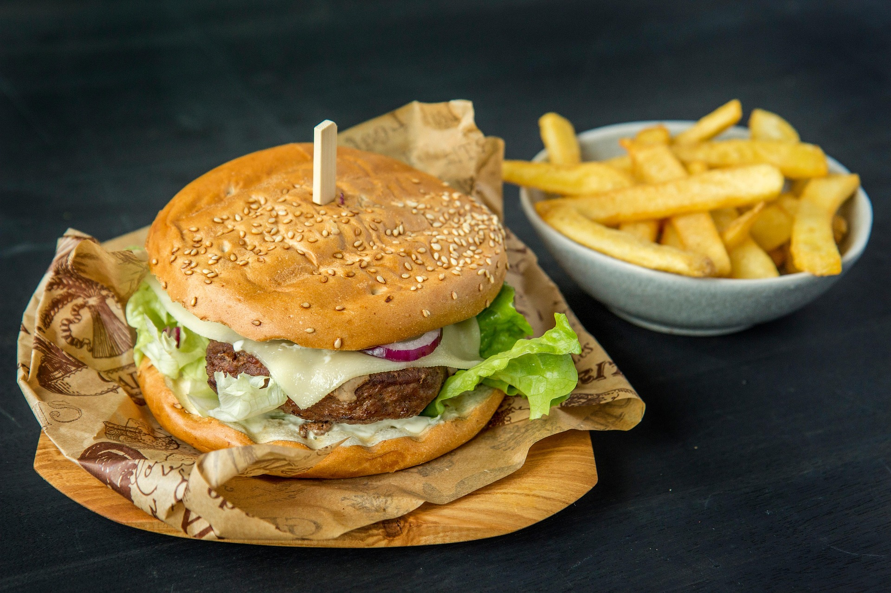

Cream Cheese-Jalapeño Hamburgers

Description
These are the best burgers I've ever had. Somebody made a version of these
and somebody else changed it a little. Instead of jalapeno peppers you can add anything
or just do the cream cheese. Trust me, your family and/or guests will beg for
the recipe! Serve on buns with your favorite toppings.
Ingredients
- Chopped Jalapeno Peppers
- Soft Cream Cheese
- Ground Beef
- Hamburger Buns
- Onions
- Bacon
Steps
- Preheat a grill for medium heat. When hot, lightly oil the grate.
- Stir together jalapenos and cream cheese in a small bowl.
- Divide ground beef into portions. Pat out each one to a thickness of 1/4 inch.
Grill the patties to your liking.
- Cut the onions and prepare the bacon.
- Spoon some cream cheese mixture onto the center of 1/2 of the buns. Top with
the remaining buns, onions and bacon. Now press the edges together to seal.
- Cook on the preheated grill until toasty, about 1-2 minutes per side.
Don't press down on the burgers as they cook, or the cheese will ooze out.
Back to the Homepage.